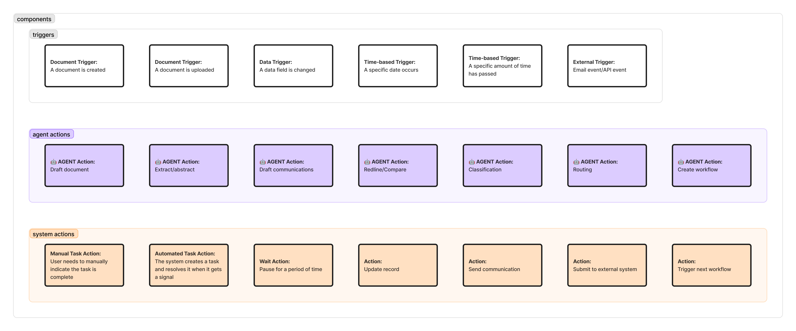
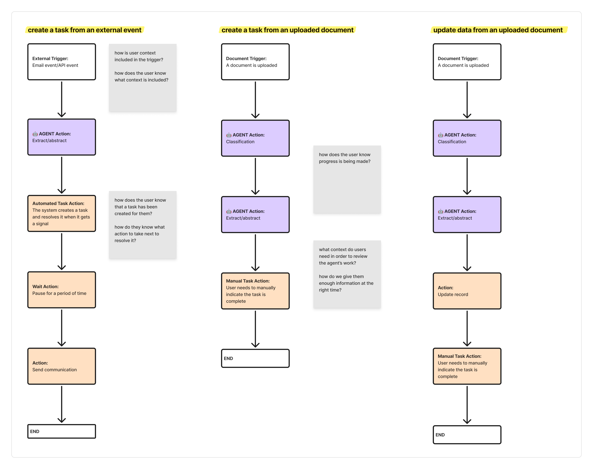
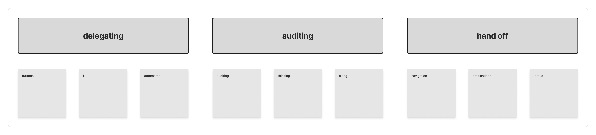

Moving from bespoke products to a catalog of actions.
When every team is racing to ship agents, the experience fragments before anyone notices. I faced that problem at two companies that started from opposite places, and in both the answer centered on a shared catalog of actions.
How do you create a unified experience when multiple teams are building agentic solutions their own way?
Design leader at both companies, responsible for the vision and for aligning design, product, and engineering around it.
Company one: three agents shipped within a year, adding millions in annual recurring revenue, and my team grew from one person to sixteen working under a single vision.
Company two: UX stayed ahead of a shifting product strategy, and the team had solid footing while it waited for direction.
And both come from speed.
New technology moves fast, and teams ship without waiting for design input or for anyone to hold a unified vision.
A user who learns how one agent behaves expects the next one to behave the same way. Every custom implementation breaks that expectation.
The cost shows up in trust. If people can't predict how agents work across a product, they won't hand them real work.
The two companies hit the same problem from different directions.
At company two, I pitched an action catalog: an API library of agent actions, like the one company one's engineers had already built. It gave engineers one set of parts to build from and gave designers one shared vocabulary.
Before engineers built any of it, design used the same structure to map workflows with object-oriented UX. We defined the objects first, then composed them into workflows. Every workflow was built from three kinds of parts.
Start a workflow.
Document created · Document uploaded · Data field changed · Specific date arrives · Set amount of time passes · External event (email, API or MCP event, partner portal)
Work the agent does.
Draft document · Extract/abstract · Draft communications · Redline/compare · Classify · Route · Create workflow
Work the system does.
Manual task · Automated task · Wait · Update record · Send communication · Submit to external system · Trigger next workflow

Two of these are easy to blur, so we split them on purpose. A manual task waits for a person to say "I've done this." An automated task tells the person what to do, then listens for them to do it and resolves itself. Say a field is missing: the system creates a task asking the person to pick an option, and the task closes when they choose one and save.
The create workflow agent action is a good example. Based on a document it received, the agent drafts a new workflow and asks, "Does this look right? Do you want it to run?" The person stays in control while the agent does the setup.
Every team was already building something. So I didn't start by asking which components they needed. I asked what they were working on, and we mapped it with the catalog. Each map raised design questions:
Either way, auditing and context become the central questions.

The workflows looked different, but the questions they raised fell into three buckets. These became the patterns every agent had to follow.

With the catalog and patterns in place, the rest was an inventory. For each team, we answered five questions:
Research worked the same way. Teams were already building and testing, so we didn't start with a long study of which components we needed. We asked each team what they were noticing as they implemented, and led the research alongside the work.
At company two, the biggest barrier the team named was a lack of visibility into what other teams had already built. The inventory was built to address that.
Arriving late means building the vision around work that is already moving. Arriving early means shaping the foundation. In both cases the move is the same: make the shared parts visible, so teams stop duplicating work and users stop meeting a different agent every time.
It also speaks to how I lead. When a company can't give people firm ground to stand on, I can lead through fully ambiguous situations and give them something to anchor their work to.